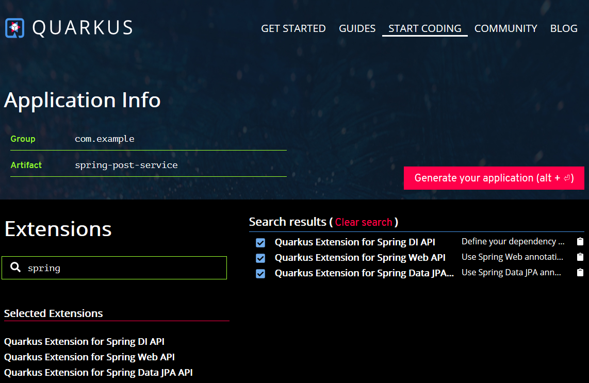

Building a Spring application with Quarkus¶
In the last post, we have created a simple Quarkus application. For those who are familiar with Spring it is better to code in their way. Luckily, Quarkus supports Spring out of box.
There are some Quarkus extensions available to support Spring framework.
- spring-di - Spring core framework
- spring-web - Spring WebMVC framework
- spring-data - Spring Data JPA integration
In this post, we will create a Quarkus application with similar functionality in the last post but here we are using the Spring extensions.
Generate a Quarkus project skeleton¶
Similarly, open your browser and navigate to Starting Coding page.
- Input spring in the Extensions text box to filter the extensions.

- Select all Spring related extensions, and customize the value of group and artifactId fields as you like.
-
Hit the Generate your application button or use the keyboard shortcuts ALT+ENTER to produce the project skeleton into an archive for downloading.
-
Download the archive file, and extract the files into your disk, and import them into your favorite IDE.
Next, we'll add some codes to experience the Spring related extensions.
Enabling JPA Support¶
First of all, you need to configure a DataSource for the application.
# configure your datasource
quarkus.datasource.url = jdbc:postgresql://localhost:5432/blogdb
quarkus.datasource.driver = org.postgresql.Driver
quarkus.datasource.username = user
quarkus.datasource.password = password
# drop and create the database at startup (use `update` to only update the schema)
quarkus.hibernate-orm.database.generation = drop-and-create
quarkus.hibernate-orm.log.sql=true
Using quarkus:list-extensions goal to list all extensions provided in Quarkus, there are a few jdbc extensions available.
Let's use PostgresSQL as an example, and add the jdbc-postgresql extension into the project dependencies.
Open your terminal, execute the following command in the project root folder.
mvn quarkus:add-extension -Dextension=jdbc-postgresql
Finally, a new quarkus-jdbc-postgresql artifact is added in the pom.xml file.
<dependency>
<groupId>io.quarkus</groupId>
<artifactId>quarkus-jdbc-postgresql</artifactId>
</dependency>
Let's reuse the Post entity we created in the last post, and create a Repository for this Post entity.
Creating a Spring Data specific Repository¶
The following is an example of PostRepository. JpaRepository is from Spring Data JPA project which provides common operations for JPA.
public interface PostRepository extends JpaRepository<Post, String>{}
Currently it seems only the basic Repository is supported, a lot of attractive features are missing in the current Quarkus Spring Data support, including:
- QueryDSL and JPA type-safe Criteria APIs, see #4040
- ~~Custom Repository interface, see #4104, #5317~~, fixed in 1.0.0.CR2.
<!-- quarkus -->
<quarkus.version>1.0.0.CR2</quarkus.version>
Create a custom interface PostReposiotryCustom.
public interface PostRepositoryCustom {
List<Post> findByKeyword(String q, int page, int size);
}
Make PostRepository to extend PostRepositoryCustom.
public interface PostRepository extends JpaRepository<Post, String>, PostRepositoryCustom{...}
Provides a implementation for PostReposiotryCustom.
public class PostRepositoryImpl implements PostRepositoryCustom {
private static final Logger LOGGER = Logger.getLogger(PostRepositoryImpl.class.getName());
@PersistenceContext
EntityManager entityManager;
@Override
public List<Post> findByKeyword(String q, int offset, int limit) {
LOGGER.info("q:" + q + ", offset:" + offset + ", limit:" + limit);
CriteriaBuilder cb = this.entityManager.getCriteriaBuilder();
CriteriaQuery<Post> query = cb.createQuery(Post.class);
Root<Post> root = query.from(Post.class);
if (!StringUtils.isEmpty(q)) {
query.where(
cb.or(
cb.like(root.get(Post_.title), "%" + q + "%"),
cb.like(root.get(Post_.content), "%" + q + "%")
)
);
}
return this.entityManager.createQuery(query)
.setFirstResult(offset)
.setMaxResults(limit)
.getResultList();
}
}
The findByKeyword method uses JPA Criteria APIs to filter posts by keyword, and also paginated the result by offset and limit parameter.
Creating a RestController¶
Create a @RestController to expose Post resources.
@RestController
@RequestMapping("/posts")
public class PostController {
private final static Logger LOG = Logger.getLogger(PostController.class.getName());
private PostRepository postRepository;
public PostController(PostRepository postRepository) {
this.postRepository = postRepository;
}
@GetMapping()
public ResponseEntity getAllPosts() {
List<Post> posts = this.postRepository.findAll();
return ok(posts);
}
@GetMapping("search")
public ResponseEntity searchByKeyword(
@RequestParam(value = "q", required = false) String keyword,
@RequestParam(value = "offset", required = false, defaultValue = "0") int offset,
@RequestParam(value = "limit", required = false, defaultValue = "10") int limit
) {
List<Post> posts = this.postRepository.findByKeyword(keyword, offset, limit);
LOG.log(Level.INFO, "post search by keyword:" + posts);
return ok(posts);
}
@GetMapping(value = "/{id}")
public ResponseEntity<Post> getPost(@PathVariable("id") String id) {
Post post = this.postRepository.findById(id).orElseThrow(
() -> new PostNotFoundException(id)
);
return ok(post);
}
@PostMapping()
public ResponseEntity<Void> createPost(@RequestBody @Valid PostForm post) {
Post data = Post.of(post.getTitle(), post.getContent());
Post saved = this.postRepository.save(data);
URI createdUri = UriComponentsBuilder.fromPath("/posts/{id}")
.buildAndExpand(saved.getId())
.toUri();
return created(createdUri).build();
}
@PutMapping(value = "/{id}")
public ResponseEntity<Void> updatePost(@PathVariable("id") String id, @RequestBody @Valid PostForm form) {
Post post = this.postRepository.findById(id).orElseThrow(
() -> new PostNotFoundException(id)
);
post.setTitle(form.getTitle());
post.setContent(form.getContent());
this.postRepository.save(post);
return noContent().build();
}
@DeleteMapping(value = "/{id}")
public ResponseEntity<Void> deletePostById(@PathVariable("slug") String id) {
this.postRepository.deleteById(id);
return noContent().build();
}
}
RestController.
- ~~The return type does not support
Page, see #4056~~ fixed. - The request parameter
@PageableDefaultPageableis not supported, see #4041
Handling Exceptions¶
In the getPost method of the RestController class, there is a PostNotFoundException thrown when a post is not found , let's create a ControllerAdvice to handle it .
@RestControllerAdvice
public class PostExceptionHandler {
@ExceptionHandler(PostNotFoundException.class)
public ResponseEntity notFound(PostNotFoundException ex/*, WebRequest req*/) {
Map<String, String> errors = new HashMap<>();
errors.put("entity", "POST");
errors.put("id", "" + ex.getSlug());
errors.put("code", "not_found");
errors.put("message", ex.getMessage());
return status(HttpStatus.NOT_FOUND).body(errors);
}
}
There are some limitations here.
- In Quarkus, a
@ExceptionHandlercan only be used in theRestControllerAdviceclass.@ExceptionHandlermethod in controllers is not supported now. @ExceptionHandlermethod can not accept Spring specific parameters, see #4042. E.g. if you want to access the HTTP request, try to replace the Spring favoredWebRequestwith the raw Servlet basedHttpServletRequest.
To use the Servlet APIs, you have to
quarkus-undertowinto the project dependencies.<dependency> <groupId>io.quarkus</groupId> <artifactId>quarkus-undertow</artifactId> </dependency>
Run the application¶
Execute the following command to build and run the application.
mvn clean quarkus:dev
After it is started, try to access the APIs using curl.
>curl http://localhost:8080/posts
[{"id":"17948b46-6f16-4991-b08b-cfa69204b4c9","title":"Hello Quarkus","content":"My first post of Quarkus","createdAt":[2019,11,21,10,1,15,303790000]},{"id":"f1a105eb-4b94-40bf-9e6e-860a69514daf","title":"Hello Again, Quarkus","content":"My second post of Quarkus","createdAt":[2019,11,21,10,1,15,303790000]}]
As you see, there are some issues in the JSON serialization. 1. The JSON format is not good to read. 2. The datetime format is serialized as an array of timestamps numbers.
To customize the JSON serialization, like we do in Spring application development, just customize a Jackson ObjectMapper.
Quarkus does not provides a Spring Boot Customizer like tool to customize Jackson ObjectMapper, but you can declare a ObjectMapper bean in your @Configuration class to archive the purpose like you do in before Spring applications.
@Configuration
public class AppConfig {
@Bean
public ObjectMapper jackson2ObjectMapperBuilder(){
Jackson2ObjectMapperBuilder builder = Jackson2ObjectMapperBuilder.json()
.featuresToEnable(INDENT_OUTPUT)
.featuresToDisable(WRITE_DATES_AS_TIMESTAMPS);
return builder.build();
}
}
Save the work, and run the application again. Try to access the http://localhost:8080/posts.
>curl http://localhost:8080/posts
[ {
"id" : "7af7f8e7-2cfe-4662-a032-e2143573f12d",
"title" : "Hello Quarkus",
"content" : "My first post of Quarkus",
"createdAt" : "2019-11-11T21:05:29.730126"
}, {
"id" : "7b3532ca-63f5-4cfb-87dd-1a4fbfbfa726",
"title" : "Hello Again, Quarkus",
"content" : "My second post of Quarkus",
"createdAt" : "2019-11-11T21:05:29.730126"
} ]
>curl http://localhost:8080/posts/search?q=first
[ {
"id" : "9af3ad3c-4a55-4d5d-81e3-4115294fc6c2",
"title" : "Hello Quarkus",
"content" : "My first post of Quarkus",
"createdAt" : "2019-11-11T21:11:20.518208"
} ]
Get the source codes from my Github.